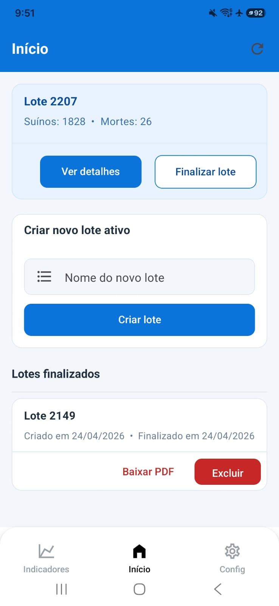
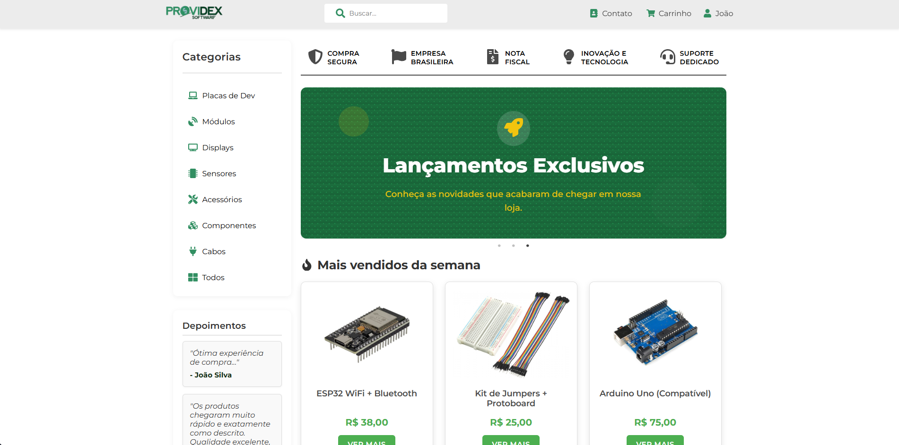
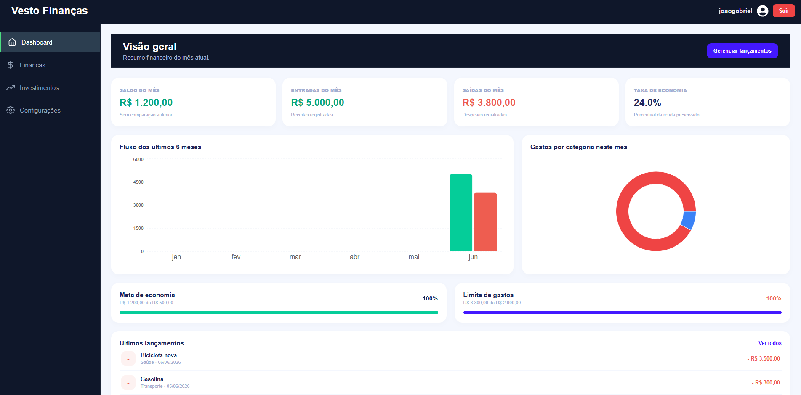

Hard skills
Python Django JavaScript PostgreSQL React Power BI
Formado em ciência da computação pela Unijuí e sempre em busca de aprimoramento em minhas habilidades e buscando novos aprendizados. Atualmente cursando análise e desenvolvimento de sistemas na Uniasselvi.
Desde criança, sempre gostei de tecnologia. Com o tempo, meu interesse evoluiu para a programação. Iniciei o curso de Ciência da Computação na Unijuí, onde tive meu primeiro contato com uma linguagem de programação, Python, que despertou em mim um grande interesse pelo backend. Mais tarde, tive a oportunidade de participar de uma bolsa de estudos no GAIC na Unijuí, onde desenvolvi um projeto focado no frontend, e foi aí que descobri um novo interesse por essa área também. Hoje, estou entusiasmado em explorar e integrar essas duas vertentes do desenvolvimento em novos projetos.

Aplicativo criado como TCC, atualmente utilizado diariamente no campo, em melhoria contínua e com uma versão desktop em desenvolvimento.
Ver projeto
Projeto de estágio concluído após o desenvolvimento do front-end do site da empresa Providex, conforme o escopo proposto.
Ver projeto
Plataforma web em processo de desenvolvimento com Django REST Framework e React.js para gerenciamento de finanças pessoais e investimentos.
Ver projeto